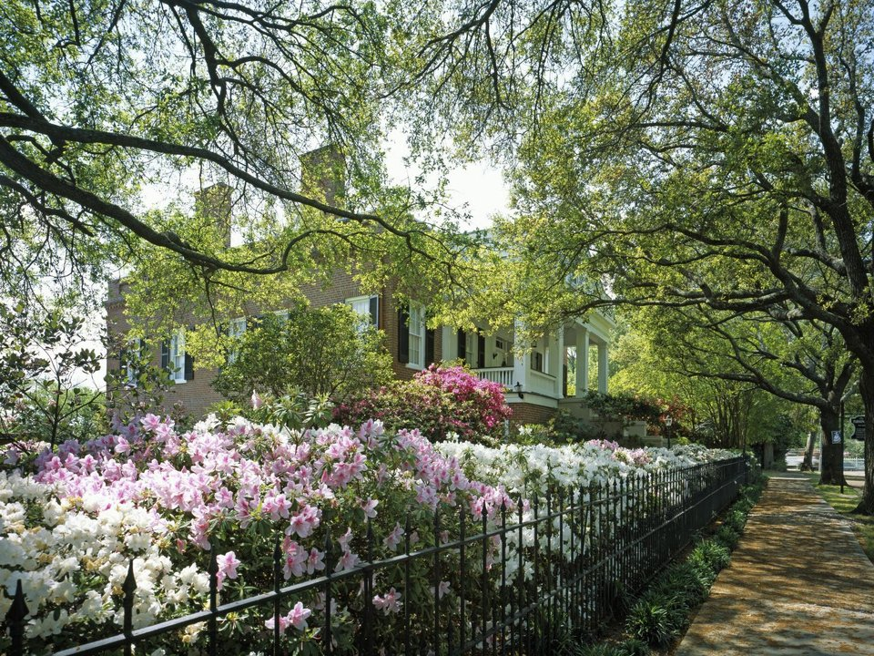

Historic inn · 1818
Monmouth Historic Inn
A Greek Revival estate with gardens, cottages and a candlelit dining room.
Official details for Monmouth Historic InnAntebellum mansions on a bluff above the Mississippi.
Founded in 1716, Natchez is the oldest settlement on the Mississippi River, and it has more surviving antebellum homes than anywhere else in the country. Stay in a historic inn, tour Melrose and the octagonal Longwood, walk the bluff at sunset and drive the first miles of the Natchez Trace Parkway.

Time illustration: direct distance at 150 KTAS plus 15 minutes for departure and arrival, matching the discovery page. Use ForeFlight for your actual flight plan.
KHEZ, Natchez–Adams County Airport, is a non-towered field northeast of town, a short drive from downtown and the bluff.
Natchez–Adams County Airport, Natchez, MS
The airport sells fuel and handles parking; confirm hours, overnight fees and ground transportation before you go. No live fuel price is shown.
Summer brings afternoon storms. About 640 nm from Myrtle Beach: plan a fuel stop and three nights.
Rates and availability need travel dates. Book early for Pilgrimage weeks.
A Greek Revival estate with gardens, cottages and a candlelit dining room.
Official details for Monmouth Historic InnA colonnaded mansion on 40 acres, home of the Castle Restaurant.
Official details for Dunleith Historic InnA boutique hotel on the bluff, an easy walk to dinner.
Official details for Natchez Grand HotelPrices and availability for your dates, through our partner Stay22. This is an affiliate link: we may earn a commission at no cost to you. The picks above are never paid.
Many restaurants close early in the week; check hours.
Seafood and Southern plates below the bluff, with views of the river.
Official details for Magnolia GrillDinner in the 1790s carriage house at Dunleith.
Official details for The Castle RestaurantFamous tamales and “knock-you-naked” margaritas.
Official details for Fat Mama’s TamalesSouthern comfort food with live blues on weekends.
Official details for Biscuits and BluesPick one or two house tours a day and leave time for the bluff.
Melrose estate and the William Johnson House, the home of a free Black barber and diarist.
ParkWalk the bluff-top park at sunset, then visit the old river landing.
Under-the-HillThe 444-mile parkway begins here; drive to Emerald Mound, a 600-year-old ceremonial mound.
ParkwayThis prototype links to the local visitor site. It does not yet match events to your travel dates.
Historic homes open for tours, the town’s signature event.
Pilgrimage for Spring PilgrimageFall home tours and the Natchez Balloon Festival.
Balloon Festival for Fall Pilgrimage & Balloon FestivalMild weather; summers are hot and humid.
Check the local calendar when choosing a weekend, and confirm dates and tickets with the organizer.
A sample long weekend: houses, the river and the Trace. Plan three nights for the flight. No bookings or availability confirmed.
Land at KHEZ mid-morning.
Melrose with a ranger, then lunch downtown.
The bluff, then back to the airport.
Land at KHEZ, subject to weather, your fuel stop and your actual flight plan.
Check in and walk downtown and the bluff.
Dinner at Magnolia Grill.
Melrose with a park ranger.
Longwood, then lunch at Fat Mama’s.
Dinner at the Castle Restaurant.
Drive the Trace to Emerald Mound.
Allow time at the airport.
Summer storms build in the afternoon; leave early.
Longwood.
Drive the Natchez Trace to Emerald Mound.
Sunset on the bluff.
These details make the difference between an appealing list and a usable getaway.
Lodging first, then Pilgrimage tours and dinners.
Arrange a car before you land.
About 640 nm. Plan a fuel stop and extra nights.
House tours increasingly include the lives of the enslaved people who built and ran these estates.
Picks and links reviewed by WingAway Weekends. Hours, prices, menus and availability change often, so confirm directly with each place before booking. Spotted something out of date, or have a favorite we missed? Email us at hello@wingawayweekends.com.
WingAway Weekends helps you discover the destination. Use ForeFlight and current official aviation information for route, performance, weather, NOTAMs and preflight decisions. Flight planning and PIC responsibility stay with the pilot.